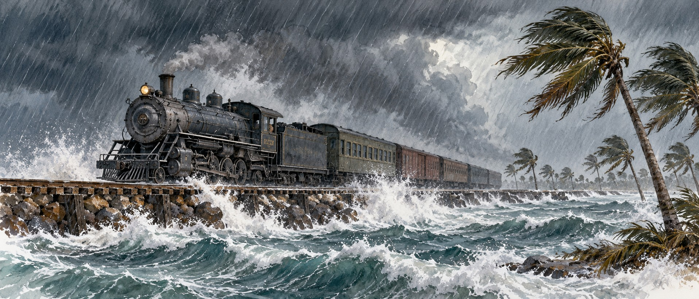

The Labor Day Hurricane of 1935
The Storm That Destroyed Flagler’s Railroad

Hemingway asked in print, just days after the storm: “Who murdered the vets?”
Ernest Hemingway sailed his boat, the Pilar, from Key West to the devastated Upper Keys to help recover the dead. What he found convinced him that roughly 260 World War I veterans had not simply been killed by a hurricane. They had been killed by men who had every chance to get them out in time. The Labor Day Hurricane of 1935 remains the most intense hurricane ever to strike the United States by barometric pressure. It killed between 408 and 485 people in hours and destroyed Henry Flagler’s Overseas Railroad beyond repair.
Men the Government Had Already Failed Once
About 684 men were stationed in three work camps on Windley Key and Lower Matecumbe Key. Many had been part of the Bonus Army, World War I veterans who camped in Washington in 1932 to demand an early bonus payment, and who were forcibly dispersed on July 28, 1932, by Army troops under General Douglas MacArthur. The Roosevelt administration put them to work building the Overseas Highway for one dollar a day plus food and housing. Many suffered from what was then called shell shock, and they lived in huts that would not survive a strong wind.
A Storm Heading Somewhere Else
The storm was first noticed as a small disturbance east of the Bahamas in late August. Officials assumed it was bound for Cuba until Leonard Povey, an aviator living in Cuba, flew a small plane into its path and found it headed for the Keys, an early use of aircraft in hurricane reconnaissance. Warnings for the Keys went out by special bulletin at 4:30 p.m. on September 1. Fred Ghent, the Florida Director of the Federal Emergency Relief Administration, had read earlier forecasts placing the storm south of the Keys as a fixed prediction rather than an uncertain estimate.
A Train Sent Too Late
Ghent believed the Florida East Coast Railway kept a rescue train ready in Miami. In fact the railway had told him a standby train would cost extra, and he never paid. He requested the train at 1:59 p.m. on September 2. It left Miami at 4:25, delayed by a drawbridge raised for Labor Day traffic and a stop in Homestead to turn the locomotive around. Engineer J.J. Haycraft pushed south through rising waves and lost nearly an hour to a fallen cable on Windley Key. The train reached Islamorada shortly before 8:30 p.m., just as the surge arrived.
Eighteen Feet of Water
A surge of eighteen to twenty feet lifted every railroad car except the locomotive and tender off the tracks, though everyone aboard the train survived. Wind-driven debris added to the danger. Some veterans dug pits for shelter and drowned as the pits filled. The Russell family of Islamorada lost fifty of its sixty-one members.
Cremated on Snake Creek
Summer heat made handling the dead an emergency, and roughly 250 victims were cremated on the banks of Snake Creek between Islamorada and Tavernier. The commonly cited toll of 485 almost certainly understates the loss, since many victims were swept out to sea. In 1965 a developer dredging the area pulled up a car with 1935 license plates containing the skeletons of five unidentified people.
A Question the Government Answered for Itself
Hemingway’s essay “Who Murdered the Vets?” appeared in The New Masses within days, blaming the relief administration for failing to evacuate the camps. The administration issued its own finding exonerating its officials. Congress held hearings on the train’s handling and on the Weather Bureau’s forecasting. The official judgment placed responsibility on nature; the timeline of an unpaid standby train, a holiday drawbridge, and a literal reading of an uncertain forecast suggests a more complicated story.
The End of Flagler’s Railroad
Flagler’s Overseas Railroad had opened on January 22, 1912. The storm destroyed forty-two miles of its track, and the financially strained Florida East Coast Railway chose not to rebuild. The state bought the surviving right-of-way and bridges and built the Overseas Highway on them. Old railroad bridges still stand beside the modern road, leading nowhere.
Quick Facts
| Landfall | Long Key, Florida Keys, September 2, 1935 |
|---|---|
| Intensity | Category 5; estimated peak winds about 185 mph |
| Lowest pressure | 892 millibars, measured by weather observer Ivar Olsen |
| Storm surge | About 18–20 feet |
| Deaths | 408–485 by varying estimates, including roughly 259–260 veterans |
| The rescue train | Requested 1:59 p.m.; reached Islamorada about 8:30 p.m.; swept from the tracks |
| The Russell family | 11 of 61 members of the pioneer Islamorada family survived |
| What it ended | Flagler’s Overseas Railroad, 42 miles of track destroyed, never rebuilt |
Did You Know?
Many of the dead veterans had been part of the 1932 Bonus Army dispersed from Washington.
Everyone aboard the swept-away rescue train survived.
Old Flagler railroad bridges still stand beside the Overseas Highway.
Vocabulary
Bonus Army: World War I veterans who marched on Washington in 1932 demanding early payment of a promised service bonus.
Barometric pressure: the weight of the atmosphere; lower pressure means a stronger storm.
Reconnaissance flight: an aircraft flight to observe a storm’s position and strength directly.
Discussion Questions
1. Which decisions before the storm might have saved lives, and who made them?
2. Why might the official finding have assigned blame to nature rather than to individual decisions?
Related Articles
FLH-0004 — The Okeechobee Hurricane of 1928
Sources
National Geographic. “The True Story of the 1935 Labor Day Hurricane That Hit the Florida Keys.” nationalgeographic.com
NOAA Atlantic Oceanographic and Meteorological Laboratory. “80th Anniversary of the Labor Day Hurricane and First Hurricane Reconnaissance.” aoml.noaa.gov
Library of Congress. “Rescue Train Swept off the Tracks by the 1935 Labor Day Hurricane.” loc.gov
Encyclopaedia Britannica. “Labor Day Hurricane of 1935.” britannica.com
Florida Historical Society. “The Labor Day Hurricane of September 2, 1935.” myfloridahistory.org
Hemingway, Ernest. “Who Murdered the Vets?” The New Masses, September 17, 1935.
Knowles, Tom. Category 5: The 1935 Labor Day Hurricane. iUniverse, 2009.
Castello, David J. “Sandblasted to Death — 1935 Labor Day Hurricane.” davidcastello.com